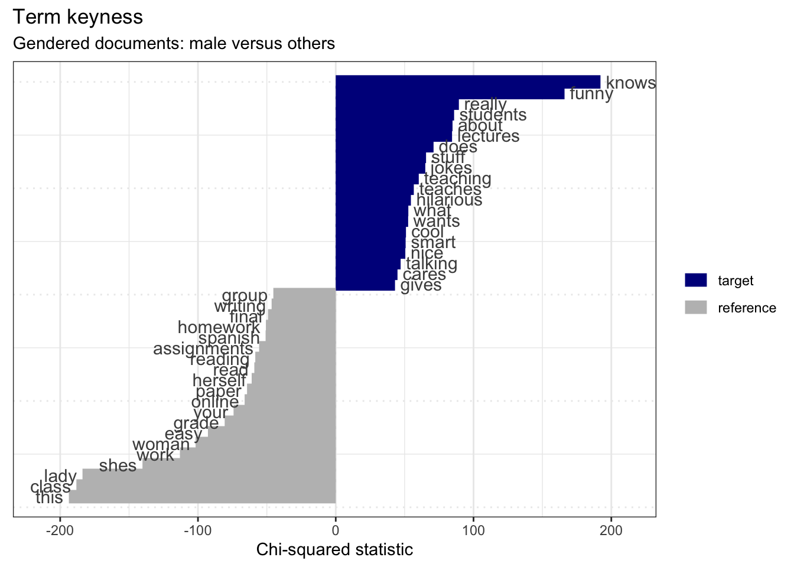

11. Exploratory methods: descriptive and unsupervised learning analysis methods
Source:vignettes/recipe_11.Rmd
recipe_11.RmdOverview
In this Recipe we will aim to explore the Rate My Professor sample dataset (He 2020). We will investigate the language associated with higher and lower course ratings using various methods. We will again lean heavily on the Quanteda package (Benoit et al. 2022) for preparing, exploring, and visualizing the student ratings.
Let’s load the packages we will use in this Recipe.
library(tidyverse) # data manipulation
library(patchwork) # organize plots
library(janitor) # cross tabulations
library(tidytext) # text operations
library(quanteda) # tokenization and document-frequency matrices
library(quanteda.textstats) # descriptive text statistics
library(quanteda.textmodels) # topic modeling
library(quanteda.textplots) # plotting quanteda objectsCoding strategies
Orientation
Let’s get familiar with the Rate My Professor dataset.
rmp_df <- read_csv(file = "recipe_11/data/derived/rate_my_professor_sample/rmp_curated.csv") # read data
glimpse(rmp_df) # preview## Rows: 19,026
## Columns: 6
## $ doc_id <dbl> 1, 2, 3, 4, 5, 6, 7, 8, 9, 10, 11, 12, 13, 14, 15, 16, 1…
## $ student_id <dbl> 26, 26, 26, 26, 26, 26, 26, 26, 26, 26, 26, 26, 26, 26, …
## $ student_star <dbl> 5.0, 5.0, 4.0, 5.0, 5.0, 5.0, 5.0, 5.0, 5.0, 5.0, 4.5, 5…
## $ course_rating <chr> "high", "high", "high", "high", "high", "high", "high", …
## $ online <lgl> FALSE, FALSE, FALSE, FALSE, FALSE, FALSE, FALSE, FALSE, …
## $ comments <chr> "This class is hard, but its a two-in-one gen-ed knockou…The rmp_df data frame contains 19,026 observations and 6 variables. Each variable corresponds to a course rating. (Note that this dataset has been curated removing many variables which will not be explored in this Recipe and all observations with ‘No comments’ were removed.)
| variable_name | name | description |
|---|---|---|
| doc_id | Document ID | Unique ID for each student course rating |
| student_id | Student ID | Unique ID for each student |
| student_star | Student Rating | Scalar rating provided by the student |
| course_rating | Course Rating | Course rating groupings (< 3.5 “low”, > 3.5 “high”) |
| online | Online Course | Was the course online (TRUE or FALSE) |
| comments | Student Comments | Student comments provided for the course |
Look at the number of ratings for our course_rating category to see how many ‘high’ and ‘low’ ratings we have in the dataset.
| course_rating | n | percent |
|---|---|---|
| high | 11329 | 0.595 |
| low | 7697 | 0.405 |
We can see that of the 19026 observations roughly 60% are labeled ‘high’ and the rest ‘low’.
If we look at the student_star variable which was provided by students we can see the distribution. In this case I will use a visualization to more easily see the distribution given the number of levels.
rmp_df %>% # data frame
tabyl(student_star) %>% # cross-tabulate
ggplot(aes(x = as.factor(student_star), y = (percent * 100))) +
geom_col() +
labs(x = "Student star", y = "Percent")We see here that a good proportion of the courses were rated ‘5’ by students followed by ‘1’ and from there a scattering of other rating values (more skewed towards the positive values). There does seem to be a drop off between 3.5 and 4 (Note this is why I curated this dataset splitting ‘high’ and ‘low’ at 3.5!)
Preparation
Let’s now prepare our data frame for exploration. We first create a Quanteda corpus object using the comments variable as the text field. Then I will apply the summary() function to the corpus object (rmp_corpus) and assign the output to a new object rmp_corpus_summary. Note that the summary() function will only return 100 documents by default, so let’s set the number of documents to return to capture all of our documents. We could hardcode the number of documents in the corpus object (n = 19026) or we can use the ndoc() function to find that number automatically –let’s take the second approach.
rmp_corpus <-
rmp_df %>% # data frame
corpus(text_field = "comments") # create corpus object
rmp_corpus_summary <-
rmp_corpus %>% # corpus object
summary(n = ndoc(rmp_corpus)) # get summary information from the corpus objectLet’s take a sample from the rmp_corpus_summary to get an idea of what the summary statistics are the are available.
set.seed(123) # set seed for reproducible sampling
rmp_corpus_summary %>% # corpus summary
slice_sample(n = 10) # sample 10 observations/ documents| Text | Types | Tokens | Sentences | student_id | student_star | course_rating | online |
|---|---|---|---|---|---|---|---|
| 18847 | 20 | 25 | 2 | 26 | 5.0 | high | FALSE |
| 18895 | 20 | 22 | 2 | 18 | 5.0 | high | FALSE |
| 2986 | 14 | 15 | 2 | 9 | 4.5 | high | FALSE |
| 1842 | 19 | 21 | 3 | 31 | 5.0 | high | FALSE |
| 3371 | 19 | 23 | 1 | 19 | 4.0 | high | FALSE |
| 11638 | 43 | 54 | 6 | 12 | 2.0 | low | FALSE |
| 4761 | 53 | 65 | 4 | 44 | 4.5 | high | FALSE |
| 6746 | 42 | 51 | 5 | 13 | 2.0 | low | FALSE |
| 16128 | 21 | 25 | 1 | 14 | 1.5 | low | FALSE |
| 2757 | 60 | 78 | 5 | 101 | 5.0 | high | FALSE |
Now something that I think might be important to consider is if there are different rating distributions for in-person and online courses. Let’s visualize the difference.
p1 <- rmp_corpus_summary %>%
ggplot(aes(x = course_rating, fill = online)) + geom_bar(show.legend = FALSE) +
labs(x = "Course rating", y = "Count")
p2 <- rmp_corpus_summary %>%
ggplot(aes(x = course_rating, fill = online)) + geom_bar(position = "fill") +
labs(x = "Course rating", y = "Proportion", fill = "Online")
p1 + p2 + plot_annotation(tag_levels = "A")Figure 1: Relationship between course rating and modality.
In Figure 1 A we see the raw counts and in B we see the proportion. We can see that the majority of courses were not online, that is in-person. There appears to be slightly more low ratings for online courses (as seen in B).
Let’s test this difference to see if there is in fact an effect for modality in our dataset. To do this we will create a cross-tabulation of course_rating and online and then run a Chi-squared test on this table.
online_rating_tab <-
xtabs(~course_rating + online, # relationship
data = rmp_corpus_summary) # dataset
online_rating_tab # cross-tabulation## online
## course_rating FALSE TRUE
## high 11130 199
## low 7494 203
c1 <- chisq.test(online_rating_tab) # chi-squared test
c1$p.value < .05 # statistical confirmation## [1] TRUEThe results suggest that there is in fact a significant effect for modality. Given this finding and the fact that there are relatively few online courses in the dataset, let’s remove the online courses from the dataset so we can focus on in-person courses.
To do this we can use the corpus_subset() function from quanteda.
rmp_corpus <- # new corpus object
rmp_corpus %>% # original corpus object
corpus_subset(online == FALSE) # remove online coursesNow let’s get the summary statistics for the new subsetted corpus object.
rmp_corpus_summary <-
rmp_corpus %>% # corpus object
summary(n = ndoc(rmp_corpus)) # get summary information from the corpus objectLet’s now see if our distribution between course_rating changed as a result of removing online courses.
| course_rating | n | percent |
|---|---|---|
| high | 11130 | 0.598 |
| low | 7494 | 0.402 |
The proportions are very similar. But now we only have in-person classes which will make our subsequent exploration a bit more homogeneous and therefore more straightforward to interpret.
Exploration
Now let’s start to explore the language use in our dataset.
Frequency analysis
As a first step, let’s consider word frequency distributions. We can use the rmp_corpus_summary object which contains Types and Tokens counts for each of the courses.
Let’s look at some descriptive visualizations of the distribution of the tokens.
p1 <-
rmp_corpus_summary %>% # corpus summary data frame
ggplot(aes(x = Tokens)) + # mappings
geom_histogram(binwidth = 5) + # histogram, 5-token bin groupings
labs(y = "Count") # labels
p2 <-
rmp_corpus_summary %>% # corpus summary data frame
ggplot(aes(x = Tokens)) + # mappings
geom_density() + # density plot
labs(y = "Density") # labels
p3 <-
rmp_corpus_summary %>% # corpus summary data frame
ggplot(aes(y = Tokens)) + # mappings
geom_boxplot(notch = TRUE) + # box plot
scale_y_continuous(breaks = seq(0, 135, 10)) + # add y-axis breaks
theme(axis.text.x = element_blank()) # remove x-axis breaks
(p1 / p2 | p3) + # positions
plot_annotation(title = "Token distribution",
tag_levels = "A") # annotationsFigure 2: Token distribution for the Rate My Professor dataset.
In Figure 2 A and B we see the distribution in a histogram and a density plot. It appears that there is a drop off in the number of tokens around 75. In C we see a boxplot which suggests that the majority of the course ratings have token counts between around 25 and 70 tokens with a larger tail on the higher end.
One question we may be interested in exploring is whether students write more or less depending on their overall rating of the course. Let’s visualize this potential relationship by creating a boxplot which compares course_rating and Tokens.
rmp_corpus_summary %>% # corpus summary data frame
ggplot(aes(x = course_rating, y = Tokens)) + # mappings
geom_boxplot(notch = TRUE) + # box plot with notches
labs(x = "Course rating category") # labelsFigure 3: Distribution of tokens by course rating.
The boxplot in Figure 3 suggests that in fact students who rate a course lower tend to write more. We can feel confident in making this assessment as the notches in the boxplot do not overlap between ‘high’ and ‘low’ course ratings. This finding may jibe with intuition –if a student takes the time to rate a course they don’t like they want to say why. There may be other explanations, but this is a finding of some interest.
Keyness analysis
Now let’s take a look at words themselves and compare those words that are more indicative of either ‘high’ or ‘low’ course ratings. This is called a keyness analysis.
First we will need to create a tokens object. We will tokenize the corpus by words removing punctuation and numbers and lowercasing the tokens.
rmp_tokens <-
rmp_corpus %>% # corpus object
tokens(what = "word", # tokenize by words
remove_punct = TRUE, # remove punctuation
remove_numbers = TRUE) %>% # remove numbers
tokens_tolower() # lowercase the tokensThen we convert this tokens object to a document-frequency matrix (dfm) using the raw counts (with no term weights).
With our rmp_dfm we can use the textstat_keyness() function to get the most indicative features. We specify a target sub-corpus (‘high’) to use as a comparison. Since we only have two levels (‘high’ and ‘low’) the reference sub-corpus will be ‘low’. We can visualize the contrasts with the textplot_keyness() function. We will retrieve the top 25 most contrastive terms.
rmp_dfm %>%
textstat_keyness(target = rmp_dfm$course_rating == "high") %>% # keyness measures
textplot_keyness(show_legend = FALSE, n = 25, labelsize = 3) + # plot most contrastive terms
labs(x = "Chi-squared statistic",
title = "Term keyness",
subtitle = "Course ratings: high versus low") # labelsNothing too surprising here. Courses rated high have terms like ‘great’, ‘best’, ‘awesome’, etc. while low-rated courses contain terms like ‘not’, ‘worst, ’avoid’, etc.
Now we used words as our terms in this analysis but it may be interesting to see if there are two-word sequences, bigrams, that may be contrastive and show something more interesting and/ or unexpected.
Let’s create a new document-frequency matrix containing bigrams. We can just pass the rmp_tokens object to tokens_ngrams() before then converting the result to a document-frequency matrix.
rmp_dfm_bigrams <-
rmp_tokens %>% # tokens object
tokens_ngrams(n = 2) %>% # create 2-term ngrams (bigrams)
dfm() # create document-frequency matrixWe can run the same steps as we did for the word-based term keyness analysis.
rmp_dfm_bigrams %>%
textstat_keyness(target = rmp_dfm_bigrams$course_rating == "high") %>%
textplot_keyness(show_legend = FALSE, n = 25, labelsize = 3) + # plot most contrastive terms
labs(x = "Chi-squared statistic",
title = "Term keyness (bigrams)",
subtitle = "Course ratings: high versus low") # labels
Again, we see terms which seem expected. However, one bigram catches my interest. The bigram guy_but shows a gendered term. This makes me wonder if there are similarities or differences between the ratings and/ or language associated with the gender of the instructor of the course.
Let’s explore gendered language and ratings to first. We start by creating a character vector which contains a set of gendered terms, one for males (male) and later one for females (female). We then pass the rmp_tokens object to the tokens_keep() function. The pattern = argument specifies the terms which we want to identify in documents and the window = argument specifies how many adjacent terms we want to keep that are around our pattern.
male <- c("he", "him", "his", "himself", "mr", "man", "guy", "hes")
rmp_tokens_male <-
rmp_tokens %>% # tokens object
tokens_keep(pattern = male, # terms to identify
window = 10) # also keep adjacent 10 terms
rmp_tokens_male %>%
head() # preview documents that match one or more of our gendered terms in `male`## Tokens consisting of 6 documents and 4 docvars.
## 1 :
## character(0)
##
## 2 :
## character(0)
##
## 3 :
## character(0)
##
## 4 :
## character(0)
##
## 5 :
## [1] "professor" "looney" "has" "great" "knowledge" "in"
## [7] "astronomy" "while" "he" "can" "explain" "them"
## [ ... and 33 more ]
##
## 6 :
## [1] "looney" "is" "a" "super" "funny"
## [6] "guy" "and" "this" "class" "was"
## [11] "really" "interesting"
## [ ... and 25 more ]The preview of the rmp_tokens_male object shows us that only those documents that match one or more of our terms in male are retained.
Let’s do this same thing but now for female-oriented gender terms.
female <- c("she", "her", "herself", "ms", "mrs", "woman", "lady", "shes")
rmp_tokens_female <-
rmp_tokens %>% # tokens object
tokens_keep(pattern = female, # terms to identify
window = 10) # also keep adjacent 10 termsWe now convert each of our gendered token objects to document-frequency matrices. Then we will only keep documents in the dfm that have gendered language and pull the document variables for each dfm. For each dfm’s document variable data frame we will add a new column gender for the appropriate gendered set. Once that is complete we can combine the two data frames by rows
rmp_dfm_male <- dfm(rmp_tokens_male) # dfm for male-gendered terms
rmp_male_docvars <-
rmp_dfm_male %>% # male-gendered dfm
dfm_subset(rowSums(rmp_dfm_male) > 0) %>% # keep documents with male-gendered terms
docvars() # pull the document variables
rmp_male_docvars$gender <- "male" # add a column `gender` and set to 'male'
rmp_dfm_female <- dfm(rmp_tokens_female) # dfm for female-gendered terms
rmp_female_docvars <-
rmp_dfm_female %>% # female-gendered dfm
dfm_subset(rowSums(rmp_dfm_female) > 0) %>% # keep documents with female-gendered terms
docvars() # pull the document variables
rmp_female_docvars$gender <- "female" # add a column `gender` and set to 'female'
rmp_docvars_gender <-
rbind(rmp_male_docvars, rmp_female_docvars) # combine by rows
glimpse(rmp_docvars_gender) # preview combined data frame## Rows: 15,118
## Columns: 5
## $ student_id <dbl> 26, 26, 26, 26, 26, 26, 26, 26, 26, 26, 26, 8, 8, 8, 8, …
## $ student_star <dbl> 5.0, 5.0, 5.0, 5.0, 4.5, 5.0, 4.0, 4.0, 5.0, 4.5, 5.0, 1…
## $ course_rating <chr> "high", "high", "high", "high", "high", "high", "high", …
## $ online <lgl> FALSE, FALSE, FALSE, FALSE, FALSE, FALSE, FALSE, FALSE, …
## $ gender <chr> "male", "male", "male", "male", "male", "male", "male", …We can see that we now have a data frame with 15,118 observations (courses) and 5 variables (including the original metadata and the new gender column).
Let’s now visualize the relationship between course_rating and gender.
p1 <-
rmp_docvars_gender %>%
ggplot(aes(x = course_rating, fill = gender)) + # mappings
geom_bar(show.legend = FALSE) + # bar plot (no legend)
labs(y = "Count", x = "Course rating")
p2 <-
rmp_docvars_gender %>%
ggplot(aes(x = course_rating, fill = gender)) + # mappings
geom_bar(position = "fill") + # bar plot
labs(y = "Proportion", x = "Course rating", fill = "Gender")
p1 + p2 + plot_annotation(tag_levels = 'A')Figure 4: Relationship between course rating and gender.
In Figure 4 B we can clearly see that there appears to be no difference in course rating between documents that have male- or female-oriented terms.
We can perform a Chi-squared test to verify.
rating_gender_tab <- xtabs(~course_rating + gender, data = rmp_docvars_gender) # cross-tabulation
c1 <- chisq.test(rating_gender_tab) # chi-squared test
c1$p.value < 0.05 # verify p-value## [1] FALSESo the rating (‘high’ versus ‘low’) given to a course does not seem to differ given the appearance of gendered terms.
The second step is to explore gendered terms and potential language associations. We will again use a keyness analysis, but this time we will use gendered terms.
Looking at documents with male-gendered terms we will need to create a reference sub-corpus –that is documents that do not have male-gendered terms. Note this will include documents with female-gendered terms and documents with no gendered terms at all.
rmp_tokens_male_reference <-
rmp_tokens %>% # tokens object
tokens_remove(pattern = male, window = 10) %>% # remove male-gendered terms
dfm() # create document-frequency matrixWe join the male-gendered target sub-corpus and the reference corpus but before we do we add a column type to both the ‘target’ and ‘reference’ document-frequency matrices so that we can specify the target when we perform the keyness analysis.
rmp_dfm_male$type <- "target" # set 'target'
rmp_tokens_male_reference$type = "reference" # set 'reference'
rmp_dfm_male_keyness <- rbind(rmp_dfm_male, rmp_tokens_male_reference) # combine by rowsNow we can generate the keyness measures with textstat_keyness() and plot the most constrastive terms. Note that I’ve removed the gendered terms with filter() and also removed terms less than three characters (to get rid of any prepositions, pronouns, etc.).
keyness_target_male <-
rmp_dfm_male_keyness %>%
textstat_keyness(target = rmp_dfm_male_keyness$type == "target") # keyness measures
keyness_target_male %>%
filter(!feature %in% male) %>% # remove male-gendered terms
filter(nchar(feature) > 3) %>% # remove short terms (< 3 characters)
textplot_keyness() + # plot the indicative features.
labs(x = "Chi-squared statistic",
title = "Term keyness",
subtitle = "Gendered documents: male versus others") # labels Here we see that male gendered documents have a series of indicative features that are particularly telling: ‘funny’, ‘jokes’, ‘hilarious’, ‘cool’, ‘smart’, ‘nice’, and ‘cares’. The bulk of these point to documents with male-oriented gender terms as also noting the jovial personality of the instructor. There’s not much we can make out of the ‘reference’ terms as they are a mixed-gendered bag of female-gendered terms and documents with no gendered terms.
Let’s now run the same analysis, but this time on female-gendered terms.
rmp_tokens_female_reference <-
rmp_tokens %>%
tokens_remove(pattern = female, window = 10) %>% # remove female-gendered terms
dfm() # create document-frequency matrix
rmp_dfm_female$type <- "target" # set 'target'
rmp_tokens_female_reference$type = "reference" # set 'reference'
rmp_dfm_female_keyness <-
rbind(rmp_dfm_female, rmp_tokens_female_reference) # combine by rows
keyness_target_female <-
rmp_dfm_female_keyness %>%
textstat_keyness(target = rmp_dfm_female_keyness$type == "target") # keyness measures
keyness_target_female %>%
filter(!feature %in% female) %>% # remove female-gendered terms
filter(nchar(feature) > 3) %>% # remove short terms (< 3 characters)
textplot_keyness() + # plot the indicative features.
labs(x = "Chi-squared statistic",
title = "Term keyness",
subtitle = "Gendered documents: male versus others") # labelsIn the indicative terms for female-gendered documents we see a bit more of a mixed bag. We have potentially two groups of interest: positive traits such as ‘sweet’, ‘wonderful’, ‘nice’, ‘helpful’, etc. and negative traits such as ‘rude’ and ‘feminist’ (I’m assuming this term is negative in this context).
Sentiment analysis
The findings from these two keyness analysis for gendered terms makes me wonder if there are differences in the sentiment of the comments and how these sentiments may or may not relate to the course rating.
Let’s perform a simple dictionary approach to sentiment analysis on this dataset. First we need to get a sentiment lexicon. I’ve chosen to use the NRC Word-Emotion Association Lexicon (Mohammad and Turney 2013) which can be loaed from the textdata package (Hvitfeldt 2020). This lexicon contains 13,875 words classified for “positive”, “joy”, “trust”, “anticipation”, “surprise”, “negative”, “anger”, “fear”, “disgust”, and “sadness”.
Once we have the sentiment lexicon in quanteda dictionary format, we then use the tokens_lookup() function to label a tokens object with sentiment for those words that appear in both the tokens and dictionary objects. We do this for both the rmp_tokens_male and rmp_tokens_female tokens objects. Then I convert both to dfm objects, generate frequency measures (where the sentiments are the features), then create a barplot contrasting the course ratings. There is a lot going on in the code to generate the plots. You can refer to the ggplot2 documentation for more information.
sentiment_dictionary <-
textdata::lexicon_nrc() %>% # load the nrc lexicon
as.dictionary() # convert the data frame to a dictionary object
rmp_tokens_male_sentiment <-
rmp_tokens_male %>%
tokens_lookup(dictionary = sentiment_dictionary) # add sentiment labels
p1 <-
rmp_tokens_male_sentiment %>%
dfm() %>% # create dfm
textstat_frequency(groups = course_rating) %>% # generate frequency measures
mutate(feature_fct = factor(feature, levels = c("positive", "joy", "trust", "anticipation", "surprise", "negative", "anger", "fear", "disgust", "sadness"))) %>% # reorder features from positive to negative
group_by(feature_fct) %>% # grouping parameter
mutate(prop = round(frequency/sum(frequency), 2)) %>% # create proportions scores
ggplot(aes(x = feature_fct, y = frequency, fill = group, label = paste0(prop))) + # mappings
geom_bar(stat = "identity", position = "fill") + # proportion bar plot
geom_label(position = "fill", vjust = 2) + # add proportions labels
labs(title = "Male instructor word sentiment", fill = "Course rating", y = "Proportion", x = "") # labels
rmp_tokens_female_sentiment <-
rmp_tokens_female %>%
tokens_lookup(dictionary = sentiment_dictionary) # add sentiment labels
p2 <-
rmp_tokens_female_sentiment %>%
dfm() %>% # create dfm
textstat_frequency(groups = course_rating) %>% # generate frequency
mutate(feature_fct = factor(feature, levels = c("positive", "joy", "trust", "anticipation", "surprise", "negative", "anger", "fear", "disgust", "sadness"))) %>% # reorder features from positive to negative
group_by(feature_fct) %>% # grouping parameter
mutate(prop = round(frequency/sum(frequency), 2)) %>% # create proportion scores
ggplot(aes(x = feature_fct, y = frequency, fill = group, label = paste0(prop))) + # mappings
geom_bar(stat = "identity", position = "fill") + # proportion bar plot
geom_label(position = "fill", vjust = 2) + # add proportion labels
labs(title = "Female instructor word sentiment", fill = "Course rating", y = "Proportion", x = "Sentiment") # labels
p1 / p2 + plot_annotation(tag_levels = 'A')Figure 5: Sentiment analysis for male- and female-gendered documents and relationship with course ratings.
Looking at these plots we see that for positive sentiment categories proportion of course ratings are quite similar between male and female. However, when we look at the negative sentiment categories we see that these categories make up a larger proportion (around 5% more) than compared to the negative categories for males. This suggests that although the category rating may be the same students tend to choose choose more negatively charged words in their comments about the course where the course instructor is female.
Summary
In this Recipe, we started with the Rate My Professor dataset. We steppe through the process of getting oriented with the dataset, preparing the dataset for analysis, and then conducting three exploratory analysis types: frequency, keyness, and sentiment. We made some interesting findings: 1) students tend to use more words when they rate the course lower, 2) students do not appear to rate courses with male or female instructors differently, 3) there is some indication that there are word types which are used more to describe male and female instructors, and 4) although course ratings to not seem to be associated with the language of student comments, it is noted that there is a potential relationship between stronger negatively charged words used to describe female instructors’ courses.
There is so much more that could be done with this dataset, but this should be enough to pique your interest in exploratory data analysis.